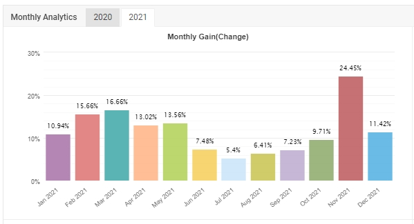

เราเป็นใคร
เราเป็นทีมงานที่มีความชำนาญในด้านการลงทุนในสาขาต่าง ๆ ทั้งหุ้น กองทุนรวม Forex และรวมไปถึง Cryptocurrency ซึ่งแต่ละคนจะมีหน้าที่ดูแลข้อมูลในด้านต่าง ๆ เฉพาะด้าน ทำให้สามารถติดตามข่าวสาร รวมถึงการหาช่องว่างเพื่อทำกำไร
วิธีการทำงาน
จะคล้ายกับการเป็นผู้จัดการกองทุน (Fund Manager) นั่นคือ จะนำเงินที่ได้จากลูกค้ามารวมกันไว้ แล้วจัดสรรการลงทุนในรูปแบบต่าง ๆ เพื่อกระจายความเสี่ยงให้มากที่สุดและได้ผลตอบแทนมากที่สุด จากนั้น จะมีการแบ่งปันผลกำไรที่ได้รับมา คืนให้แก่ลูกค้าเป็นรายเดือน
มีการศึกษาหุ้นที่ออกใหม่ (IPO) หุ้นที่อยู่ในตลาด จากหลาย sector โดยอาศัยข้อมูลที่เกี่ยวข้องต่าง ๆ เช่น Fund Flow, Free Float,ข้อมูลทางบัญชีต่าง ๆ รวมถึงมีการประเมินราคาในอนาคต เพื่อกำหนดราคาเป้าหมายของหุ้นสำหรับการทำกำไรจากส่วนต่างของราคา (Capital Gain) ได้
มีการกระจายการลงทุนในกองทุนรวมในรูปแบบต่าง ๆ ตั้งแต่ กองทุนรวมตราสารหนี้ กองทุนรวมตราสารทุน กองทุนรวมผสม รวมไปถึงกองทุนเฉพาะทาง เช่น กองทุนที่ลงทุนในหุ้นกลุ่ม techonology กองทุนที่ลงทุนในสินทรัพย์ทางเลือกอย่าง ทองคำ เป็นต้น นอกจากนี้ ยังมีกองทุนที่ไปลงทุนในต่างประเทศ เช่น กองทุนอินเดีย จีน เป็นต้น ทำให้ความเสี่ยงในการบริหารลดลงอย่างมาก
หนึ่งในสัดส่วนการลงทุนที่ใหญ่ที่สุดของเรา คือ Forex เนื่องจาก Forex สามารถใช้เครื่องมือช่วยในการ Trade ได้อย่างมีประสิทธิภาพ ที่เรียกว่า Expert Advicer : EA ซึ่งทีมงานมีการพัฒนาอย่างต่อเนื่องจนทำให้ได้ EA ที่สามารถทำกำไรได้ในระยะยาวอย่างมั่นคง โดย EA ของเรา มีการทดสอบตลาดนานมากกว่า 1 ปีแล้ว จึงมั่นใจในประสิทธิภาพของการทำกำไรได้ในระยะยาว
สำหรับผลตอบแทนล่าสุด ที่ทำได้ ไม่ต่ำกว่าเดือนละ 5% ดังรูป

ทางเรายังมีการศึกษา Cryptocurrency เพื่อจะเป็นอีกช่องทางหนึ่งสำหรับการทำกำไร โดยจะมีลักษณะการทำกำไรอยู่ 2 รูปแบบ คือ การ trade ทั้งจาก Cryptocurrency และ token ที่สามารถทำกำไรได้ รวมไปถึงการเล่นเกมส์ (GameFi) ที่มี Cryptocurrency เป็นรางวัล เช่น Axie เป็นต้น